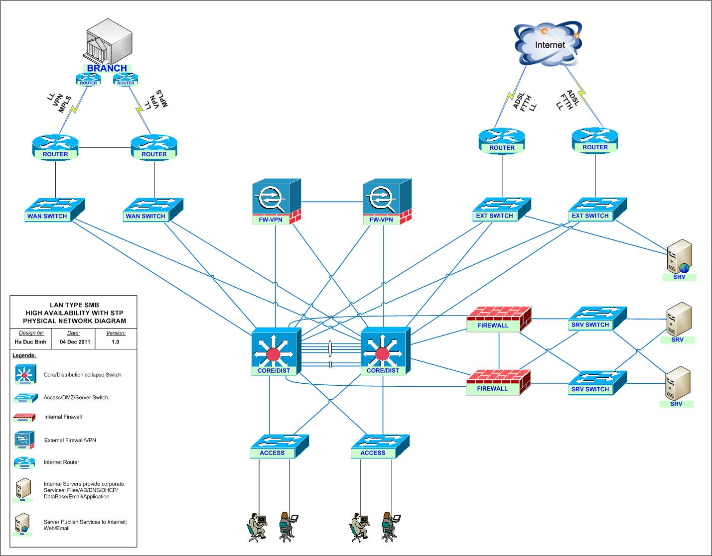

Trước tiên cần cáo lỗi với bạn đọc vì trong phần giải thích về NAT của bài viết trước, chỉ vì người viết
ngại gõ lại chuỗi địa chỉ 117.x.y.z:5000 mà đã nảy sinh lỗi gây khó hiểu cho nhiều người. Hiện chúng tôi đã
tiến hành sửa lỗi, nếu những bạn đọc nào còn băn khoăn về cơ chế hoạt động của NAT thì nên xem lại bài viết
trước một lần nữa, đối chiếu với hình ảnh minh họa để nắm bắt rõ được vấn đề trước khi chúng ta đi tiếp.
Cũng cần lưu ý rằng, trong khuôn khổ loạt bài lần này, chúng ta sẽ chỉ điểm lại những khái niệm căn bản
nhất, thiết yếu nhất phục vụ việc sử dụng các thiết bị home networking.
Các chi tiết kĩ thuật thực sự cụ thể
hoặc những khái niệm vốn chủ yếu chỉ để phục vụ nhu cầu quản lý của cỡ doanh nghiệp, nhà mạng trở lên như cơ
chế hoạt động của các giao thức, cấu trúc địa chỉ (subnet, netmask), PAT, các giao thức như TCP/UDP,
VLAN..v.v.. chúng ta sẽ để dành cho một chủ đề khác, một loạt bài khác.
Hiện nay hệ thống mạng có dây vẫn là xương sống của thế giới Internet. Một tay tỉ phú có thể chơi trội sắm
hàng trăm router wifi đắt tiền để phủ sóng toàn bộ khuôn viên biệt thự rộng vài hecta của mình, hay một số
thành phố tiên tiến có thể tiến hành phủ sóng wifi trên toàn bộ khu nội thành, nhưng cuối cùng thì để kết
nối với thế giới, trong đó vẫn phải có một số thiết bị kết nối với dây dẫn của nhà cung cấp mạng (ISP), công
nghệ của chúng ta chưa đạt đến ngưỡng có thể tạo ra hệ thống mạng không dây toàn cầu.
Vì vậy cho dù bạn có
thiết kế mạng gia đình để tất cả các thiết bị đều sử dụng tín hiệu không dây, các kiến thức về mạng có dây
vẫn rất cần thiết. Hơn nữa, nhiều thành phần trong hệ thống mạng có dây chúng ta sắp tìm hiểu lần này, tuy
có thể khó hiểu hơn các kiến thức về địa chỉ mạng lúc trước đôi chút nhưng đều là những điểm thiết yếu cần
biết nếu bạn muốn cải thiện chất lượng kết nối, sửa lỗi hay phát hiện nguy hiểm.
